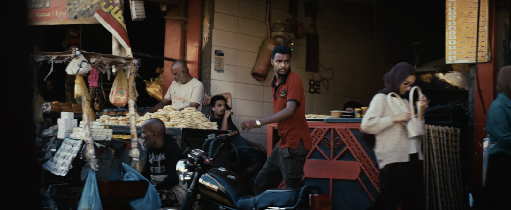
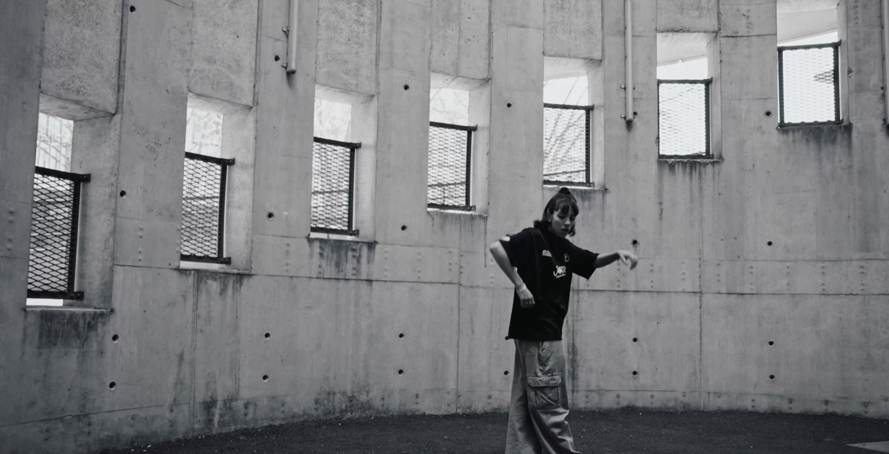
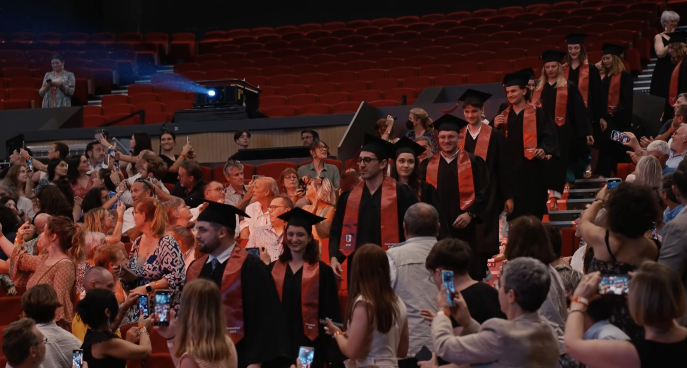
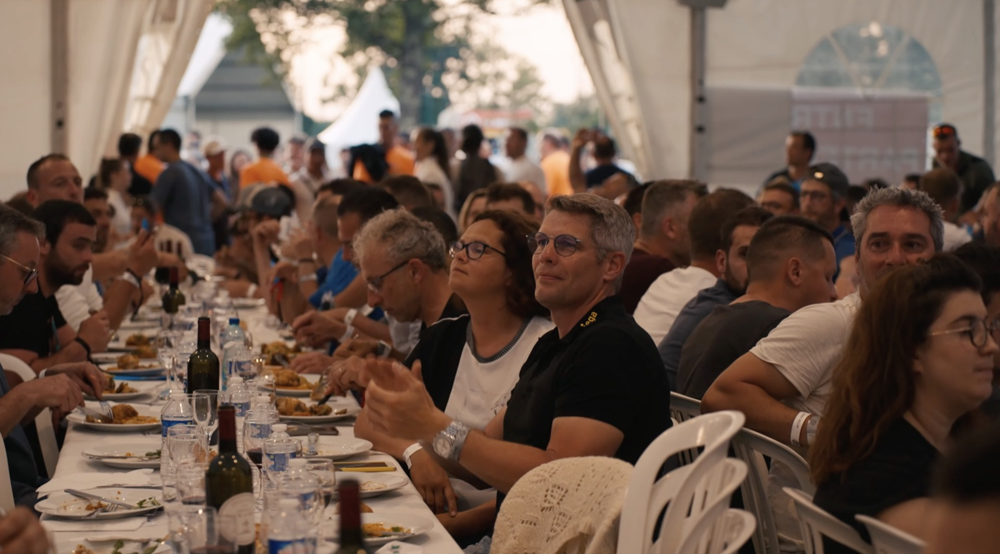

Mauvais Grain



Six films. Bordeaux.


I.

Observer sans intervenir. Laisser les rencontres, les ambiances et la lumière naturelle guider le récit.
II.

Construire le film autour de plans fixes. Le mouvement naît uniquement de la danseuse.
III.

Prendre le temps d'observer. Un film contemplatif où chaque plan laisse respirer le paysage.
IV.

Tourner durant les dernières minutes du jour, pour une lumière douce et chaleureuse.
V.

Une approche immersive, au plus près des étudiants, pour saisir les instants spontanés.
VI.

Se mêler au public : concerts, DJ, jeux de lumière et feu d'artifice.